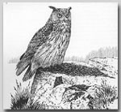
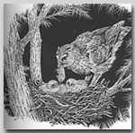

子育て
卵からの孵化は、巣をいとなむ過程の折り返し点です。この世に現れたちっぽけなフクロウ族のひなは、母親が運んでくれる食べ物をついばむことと、親鳥に自分たちのことを知らせて安心させようと鳴くことを除けば、自分では何もできません。一般に、ひなたちの大きさのちがいはきょうだいで歴然としていますが、子どもたちのあいだでは、はっきりした攻撃行動はめったに見られません。食料が不足する時期には、もっとも小さいひなが一羽くらい死ぬかもしれませんが、じっさいに死にかけてしまうまでは、親やきょうだいに殺されることはなさそうです。

いちばん年上の子は親からもっともよいあつかいを受けます。親鳥は自分の体温で温めてやらなくともいちばん下の子がなんとかやっていけるようになるまでは、すべての子どもたちをおなかの下に抱いてやるからです。この段階では、最初に孵化したひなはもうかなりたくましい若鳥に育っているかもしれません。昆虫や他の小動物を食べる種ならば、孵化後一週間か一〇日もすれば、自分で餌をついばむことができます。小哺乳類を食べる種の場合は、一か月かそれ以上たたなければ自分で餌を捕れないでしょう。自由にしっかり飛べるようになる前に巣を離れるのが、フクロウ族の若鳥の特色です。多くの種では、若鳥が木の枝に登りはじめるとき、まだふわふわしたかたまりに見えます｡
もし下に落ちても､ 太くて短い翼はバランスをとるためにだけ用いて、強力な爪とくちばしを使い､ もう一度樹上へひっかけ登ることができます。この段階では、フクロウの若鳥はキツネやアナグマに食べられてしまうほど弱々しく、木に止まっていてもカラスや猛禽類に襲われかねません（それに加え他のフクロウ類も大いに危険な存在です）。親鳥はたくみにひなを守りますし、ひなたちは自分の身を隠すのがとても上手です。いくつかの種では、未熟な若鳥が巣から何百メートルも（いちばん遠くへ行くものでは八〇〇メートルも）さまようかもしれません。飛翔の準備は、懸命に羽ばたくことがこの期間中つづけられます。そうしてついに、不慣れながらも短い遠征にでかけます。そして自由に飛べるようになっても、親がかりの暮らしがそれでおしまいになるわけではありません。若鳥たちは独立する前に、立派に飛べて、しかも狩りのしかたも知らなければならないのです。これにはメンフクロウの場合、巣立ちから二、三週間かかります。また同じくらいの大きさの種でも､モリフクロウでは何か月も遅れることがあります。
